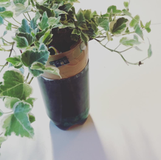
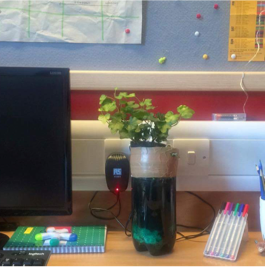
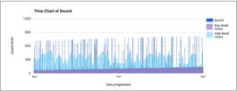
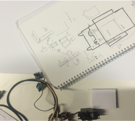
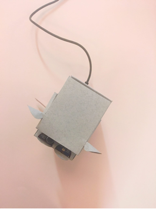
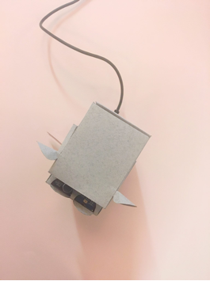

Project
Background
As part of a class project, we were asked create a probe that would gather data with the use of sensors hooked up to an arduino. We decided to use a plant to hide our sensors in plain sight, and keep it on a student’s desk to gather data. The sound, light, vibration, temperature and humidity, and motion sensor readings can be viewed in this raw data file
 Data Inspiration
Data analysis reveals strange spikes in sound. We presumed these could be things like swearing or rage, since studying can get aggravating at times. However, these occurred even the student was assumed to sleeping in their room. Another assumption could be that the sensors are not very accurate, and often result in misreadings. Drawing inspiration from both our assumptions: the student might have had moments of rage, or data was being read and recorded inaccurately, we converted our probe into a ragebot. Rather than a plant, we decided to use a more familiar and friendly hippo as our desk object. We kept the product’s appeal light and fun as the intended use was to alleviate stress during studying.
Product Design
 
